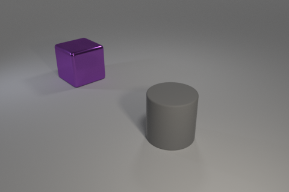
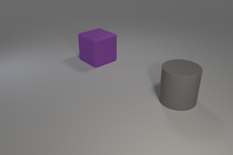
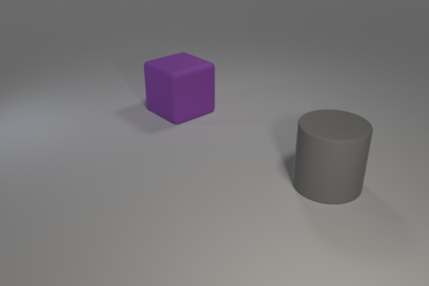
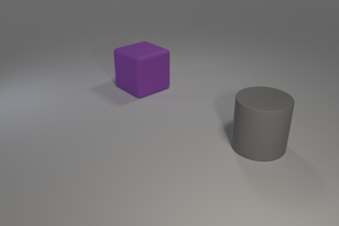
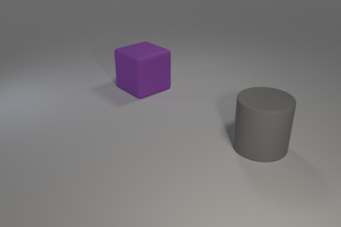

 


Train:
Candidates: 0, 1, 2

Intended concept: Metallic cylinders are followed by rubber spheres.
Solution provided by tool:
Our tool chose candidate 0.
The discriminator given was: Forall q0: cylinder!0. Forall q1: cube!1. And(right!0!1 metal!1)
The neural baseline model chose candidate 1